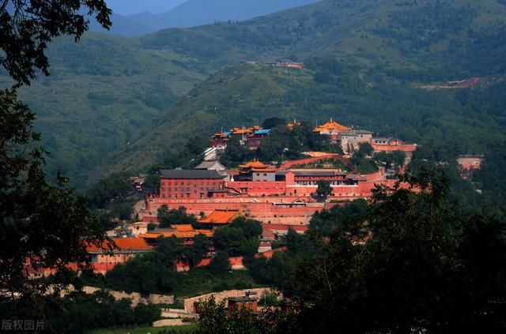
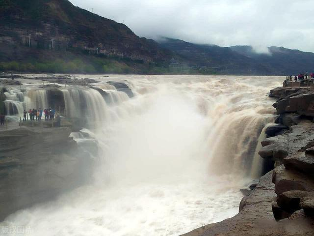
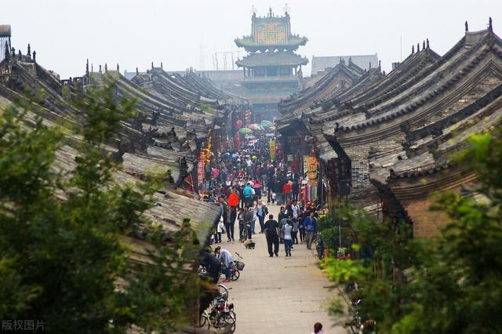
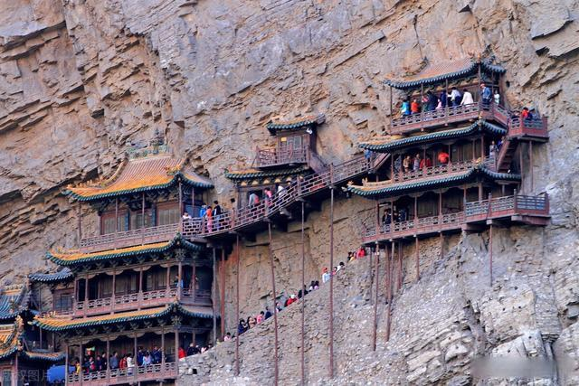
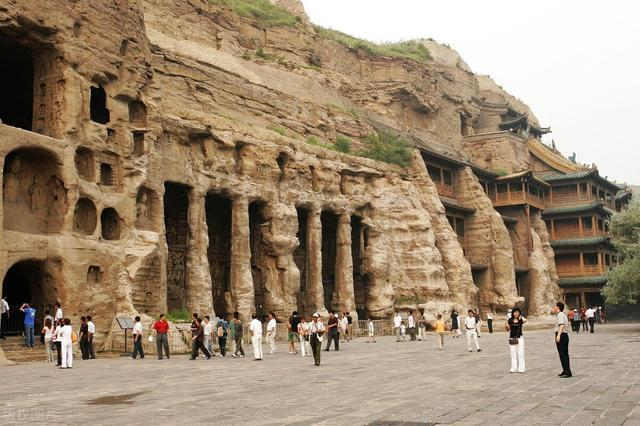
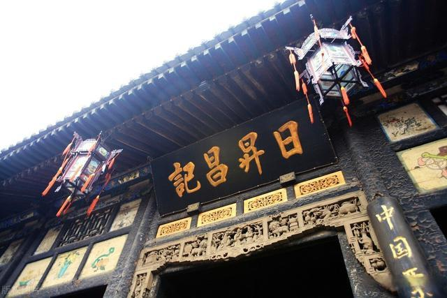

五台山
山西，当然最重要的是“山”——五台山。巍峨挺拔，风景秀丽。
它是一个很好的避暑胜地，是中国的一个5A级旅游景点，也是中国唯一一个绿寺和黄寺并存的佛教道场。
山上有许多寺庙，许多朝代的皇帝都来朝拜，这是游客必须的。

壶口瀑布
壶口瀑布是中国第二大瀑布，也是世界上最大的黄色瀑布。壶口瀑布有两个最佳观赏期。
春天，它被称为“三月桃花洪水”，因为它气势宏伟，水量巨大。在秋冬季，雨季刚刚过去，彩虹经常出现，这就是所谓的“湖口秋风”。

平遥古城
平遥古城被世界纪录协会评为中国现存最完整的古县城。
平遥古城向人们展示了一幅不同寻常的汉文化、社会、经济和宗教发展的全貌。在这里你可以感受到晋商文化的浓郁味道。

悬空寺
悬空寺位于恒山的悬崖之间，以其靠近深渊的险峻而闻名。
《时代周刊》年被评为世界十大不稳定建筑之一。悬空寺是山西省重点文物保护单位，是衡山十八景中的“第一景”。
它是中国最早、保存最好的高空木崖建筑。

云冈石窟
云冈石窟是中国最大的古代石窟之一，也是中国首批重点文物保护单位。
2001年，它被联合国教科文组织列入世界遗产名录。这里的造像宏伟多彩，不同时期可以看到不同风格的石窟造像。

日升昌票行
日升昌银行是当时中国第一家专门从事存贷款和汇兑业务的银行，也是中国银行业的先驱。
如今，日升昌银行已更名为中国银行博物馆，从中可以看到中国民族银行业的发展轨迹，象征着中国古代银行业的辉煌历史。